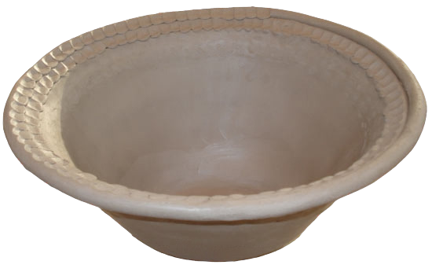

(o) Decorate the object before it gets completely dry, then put the object in the shade so that it dries slowly, as shown in Figure 14.

Figure 14: Decorated object

Activity 2
(a)
Model at least one object by using the coil method;
(b)
Display in the class for discussion; and
(c)
Store the objects you modelled for the art exhibitions at school.
Modelling by slab and coiling method
Modelling by slab and coiling method is a technique used to create a model by combining two methods which are slab and coiling.
This involves creating shapes that mix flat and curved parts.
Steps for modelling by the slab and coiling method:
(a)
Choose the shape you want to model.
It can be, a bowl or flower vase;